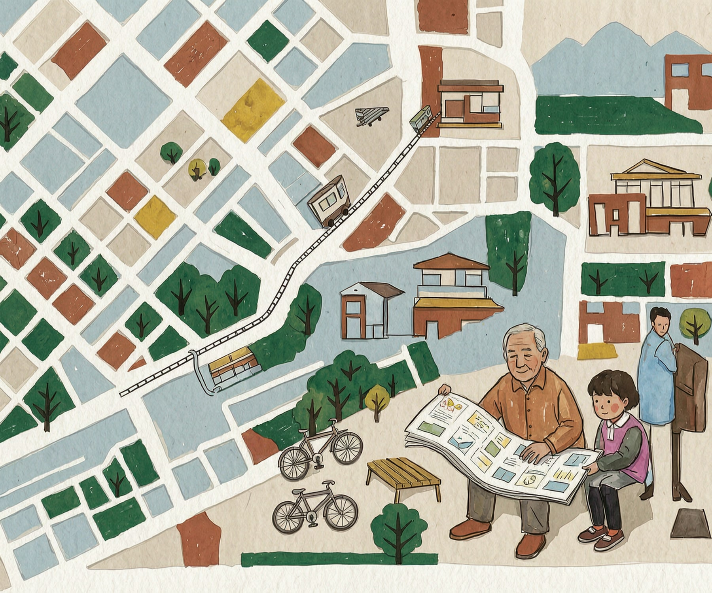

鐵路
港鐵東鐵綫
由上水站往南可到粉嶺、大埔、九龍及港島；北行列車分別前往羅湖或落馬洲，出發前先看清月台顯示。

街道地圖正在展開
你仍可使用地點列表查閱地址及詳情。
TRAVEL GUIDE
上水公共交通方式一覽。先選交通方式，再直接連結到地圖上的車站、巴士總站及周邊資源。
由上水站往南可到粉嶺、大埔、九龍及港島；北行列車分別前往羅湖或落馬洲，出發前先看清月台顯示。
主要站位集中在上水總站及上水站新運路、彩園路一帶。前往沙頭角、打鼓嶺、元朗、九龍及港島的路線分散於不同月台。
上水站及總站周邊有機場巴士及口岸接駁服務。口岸、營辦商、售票方式及上落點會變動，出門前應再核對當日安排。
上水站小巴總站連接古洞、坑頭、河上鄉、沙頭角、唐公嶺、蓮麻坑及麒麟村等方向；班次及尾班車時間按路線而定。
新康街、符興街及上水市中心一帶設有紅色小巴站，目的地包括區內及新界其他地點；班次、收費和尾班車由營運者現場安排。
上水站及上水廣場一帶設的士上落位置，適合前往公共交通較疏落的村落。繁忙時段宜預留候車時間。
路線、班次、票價及月台可能隨時調整；本指引用於規劃方向，出發前請以運輸署、港鐵、巴士及小巴營辦商最新公布為準。
FIELD NOTES
七份義工手寫推薦；橫向原稿保持橫向，直向原稿保留原貌。
「免費兒童遊樂設施，裡面還有籃球場、足球場；每年3–5月是賞花熱門景點。遛娃散心兩不誤。」
「綜合性體育館，各種球類需預約；設健身室、室內緩跑、攀岩及兒童遊樂室。」
「提供成人圖書、兒童圖書及多元藏書，並設電腦資訊站；近港鐵站及大商場。」
「標準400米八線跑道、天然足球場；手記記錄晚上有照明，並設更衣室、洗手間、飲水機及小食亭。」
「從上水站A4出口可直達；商場內有美妝、美食、服裝及珠寶等選擇。」
「有菜、海鮮、肉、熟食、生果、日用品、鮮花及勞保用品；樓上可到圖書館。」
「上水站連接東鐵綫、巴士總站及的士站；手記記錄的士站位於A3出口。」
重要聯絡
社區導航大使
由組員共同選點、核對資料、走訪社區及撰寫推薦，整理成這份北區・古洞資源地圖。
分類、資料、路線、校對
走訪上水、粉嶺及北區社區空間
地圖、資料、街坊推薦
活動經歷 4 節小組及 2 次實地社區探索完成。資料日期：2026.10.29
義工推薦
點擊相片放大。